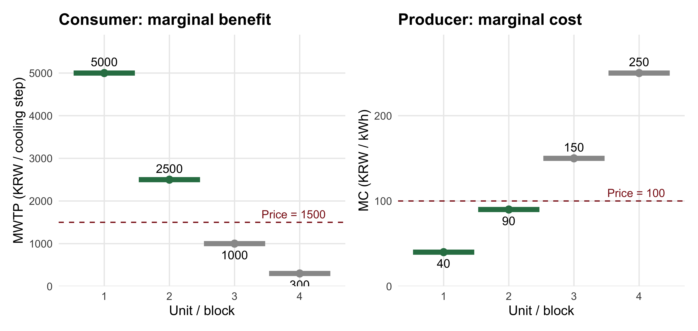
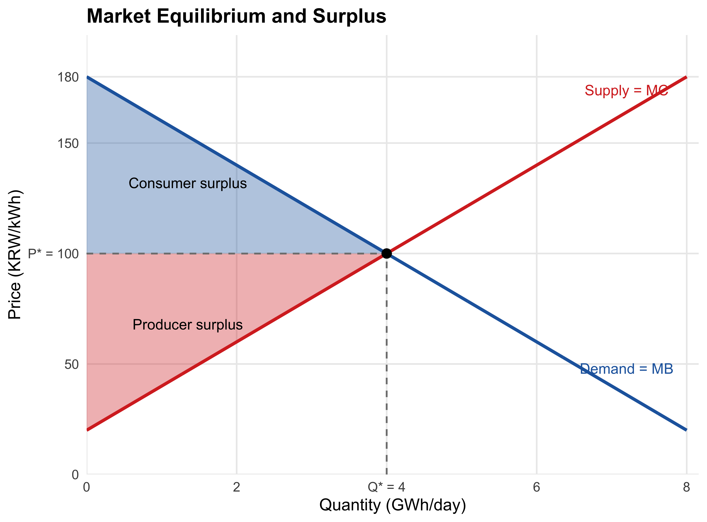
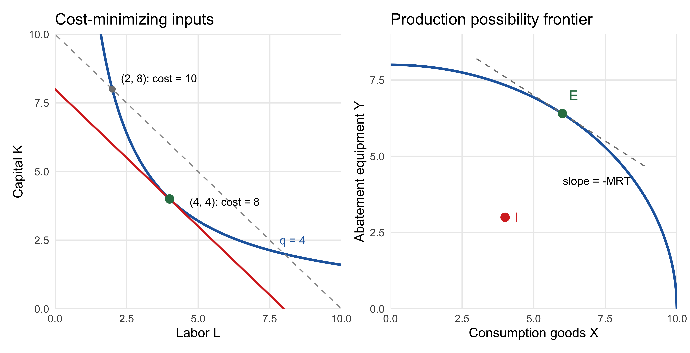
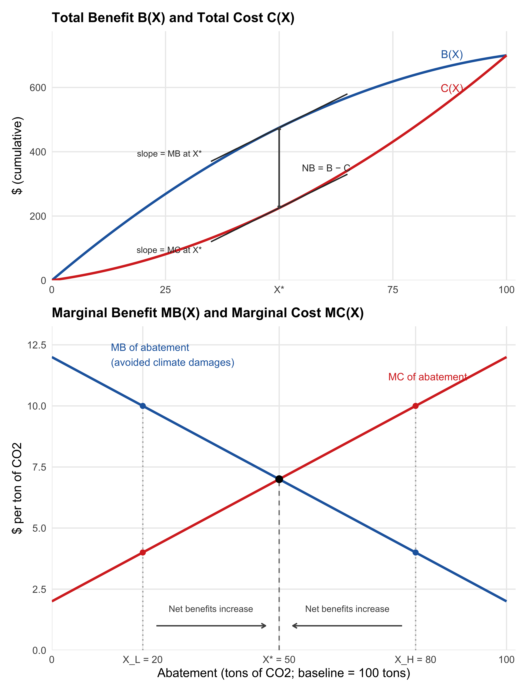
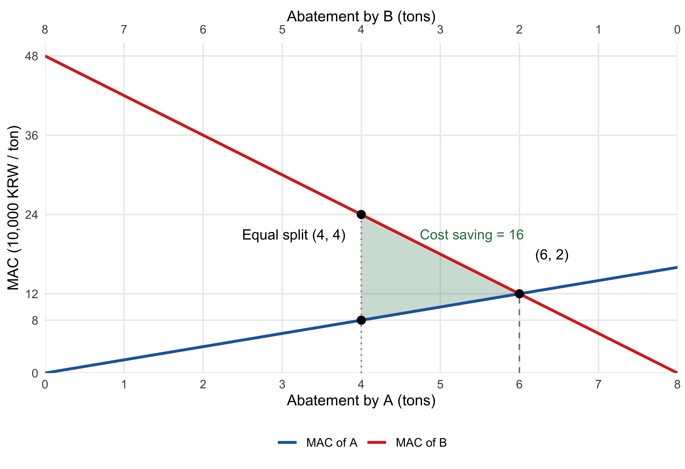

3 시장과 경제적 효율성
이 장과 다음 장은 한 쌍으로 읽으면 좋다. 이 장에서는 외부효과 없이 경쟁이 작동하는 시장을 기준점으로 삼아, 어떤 의미에서 자원배분이 효율적인지 살펴본다. 다음 장에서는 온실가스 배출이 타인에게 끼치는 피해가 가격에 반영되지 않을 때 이 결론이 어떻게 달라지는지 살펴본다. 현실의 전력 시장이 이 장의 가정을 모두 충족한다는 뜻은 아니다. 기준점을 먼저 알아야 현실이 그 기준에서 벗어나는 이유와 정책이 필요한 지점을 설명할 수 있다.
수요·공급과 시장균형
시장실패를 이야기하기 전에, 먼저 시장이 무엇이며 어떻게 작동하는지부터 정확히 해두자. 시장(market)이란 구매자와 판매자가 교환을 통해 재화의 배분을 결정하는 탈중앙화된(decentralized) 제도다 (Keohane 와/과 Olmstead 2016년). 여기서 ’탈중앙화’가 핵심이다. 누가 얼마나 생산하고 누가 얼마나 소비할지를 지시하는 중앙 계획자는 없다. 수많은 개인과 기업이 각자 자신의 이익을 좇아 내리는 결정들이 가격이라는 신호를 통해 조율될 뿐이다. 놀라운 것은, 뒤에서 보듯 일정한 조건이 갖춰지면 이 무질서해 보이는 과정이 사회 전체에 바람직한 결과를 만들어낸다는 사실이다.
수요곡선: 한계편익을 읽는 창
시장의 구매자 쪽 행동을 요약한 것이 수요곡선(demand curve)이다. 가격이 내려가면 수요량이 늘어난다는 우하향 관계는 익숙할 것이다. 그러나 이 책 전체를 위해 더 중요한 것은 수요곡선을 읽는 또 하나의 방법이다. 수량을 고정하고 수요곡선의 높이를 읽으면, 그것은 소비자가 그 재화 한 단위를 더 얻기 위해 지불할 용의가 있는 최대 금액 - 한계지불의사(marginal willingness to pay, MWTP) - 이다. 어떤 재화에 돈을 지불할 용의가 있다는 것은 그만큼의 편익을 얻는다는 뜻이므로, 수요곡선의 높이는 곧 소비의 한계편익(marginal benefit, MB)을 나타낸다.
여기서 “지불의사”라는 말의 정확한 의미를 짚어두자. 어떤 재화에 대한 지불의사란, 그 금액을 내고 재화를 얻는 것과 돈을 그대로 쥔 채 다른 데 쓰는 것 사이에 무차별한(indifferent) 최대 금액이다. 지불의사만큼 지불한다면 사든 안 사든 나을 것이 없다 - 순편익이 정확히 0이라는 뜻이다. 이 정의가 왜 중요한지, 구체적인 예로 확인해보자. 이 장 전체가 결국 기후변화로 이어지므로, 예 역시 전력 시장에서 가져온다.
한여름 밤, 무더위에 잠 못 이루는 민준을 생각해보자. 에어컨을 29도로 켜는 것만으로는 성에 차지 않아, 설정온도를 한 단계씩 낮추려 한다. 29도에서 28도로 낮추는 첫 단계는 찜통 같은 방 안의 열기를 몰아내 주므로 민준은 이를 위해 5,000원까지 낼 용의가 있다. 28도에서 27도로 낮추는 두 번째 단계에는 이미 방이 어느 정도 시원해졌으니 2,500원까지만 낼 용의가 있다. 27도에서 26도로 낮추는 세 번째 단계부터는 쾌적함이 크게 달라지지 않아 1,000원, 26도에서 25도로 낮추는 네 번째 단계는 오히려 이불을 찾을 만큼 쌀쌀해질 수 있어 300원까지만 낼 용의가 있다고 하자. 여기서 한 단계 더 낮춘다면 어떻게 될까? 민준은 추위에 시달리게 되므로, 오히려 돈을 받아야 견딜 만한 수준 - 음(-)의 한계편익 - 에 이를 것이다.
| 냉방 강도 단계 | 설정온도 | 한계지불의사(MWTP) | 전기요금이 단계당 1,500원일 때 사용 여부 |
|---|---|---|---|
| 1단계 | 29→28도 | 5,000원 | 사용 (순편익 +3,500원) |
| 2단계 | 28→27도 | 2,500원 | 사용 (순편익 +1,000원) |
| 3단계 | 27→26도 | 1,000원 | 사용 안 함 (순편익 -500원) |
| 4단계 | 26→25도 | 300원 | 사용 안 함 (순편익 -1,200원) |
전기요금이 단계당 1,500원이라면 민준은 27도까지, 즉 두 단계만 낮추는 것이 합리적이다. 세 번째 단계는 얻는 편익(1,000원어치)이 치러야 할 요금(1,500원)보다 작으므로, 낮추는 순간 오히려 손해다. 요점은 “지불의사가 가장 큰 것을 고르라”가 아니라 “지불의사가 가격을 웃도는 한 계속 소비하라”는 것이다 - 비싸더라도 가장 값진 것을 고르면 된다는 생각은 함정이다. 언제나 가치(지불의사)에서 비용(가격)을 뺀 순편익을 기준으로 판단해야 한다.
민준 한 사람의 지불의사는 냉방 강도를 높일수록 계단식으로 떨어진다. 추가 소비에서 얻는 만족이 줄어드는 한계효용 체감(diminishing marginal utility)을 반영한 예다. 이제 지불의사가 서로 다른 수많은 가정과 사업장의 수요를 같은 가격에서 합하면 시장수요곡선(market demand curve)을 얻는다. 폭염 속 병원처럼 냉방의 가치가 높은 수요자도 있고, 요금이 조금만 올라도 냉방을 줄이는 수요자도 있다. 이런 차이를 가진 수요자가 많으면 개별 수요의 계단을 매끄러운 곡선으로 근사할 수 있다. 위의 금액과 단계당 요금은 선택 원리를 설명하기 위한 가정이며, 실제 냉방 전력량과 요금은 기기·실외온도·사용시간에 따라 달라진다.
공급곡선: 한계비용을 읽는 창
공급 쪽도 같은 방식으로 읽을 수 있다. 공급곡선(supply curve)의 높이는 생산자가 그 재화 한 단위를 더 생산하기 위해 받아야 하는 최소 금액이다. 이윤을 추구하는 기업은 가격이 추가 생산의 비용보다 높은 한 생산을 늘리고, 낮아지면 줄인다. 따라서 기업은 가격이 한계비용(marginal cost, MC) - 한 단위 더 생산하는 데 드는 비용 - 과 같아지는 지점까지 생산하며, 공급곡선은 곧 산업의 한계비용곡선을 따라 그려진다.
이번에는 전력회사가 여름날 늘어나는 수요에 맞추어 발전량을 추가하는 상황을 생각해보자. 같은 크기의 발전 블록 네 개를 사용할 수 있고, 각 블록의 한계비용이 kWh당 40원, 90원, 150원, 250원이라고 가정하자. 저렴한 기저부하 발전부터 LNG 복합화력, 노후 석유화력, 피크용 가스터빈(peaker plant)으로 투입 범위를 넓히는 모습을 단순화한 예다. 이 수치와 순서는 설명용이며, 실제 급전순위는 연료가격·설비 효율·기동비용 등에 따라 달라진다.
| 추가 발전량 | 한계비용(MC) | 도매가격이 kWh당 100원일 때 공급 여부 |
|---|---|---|
| 1블록째 (기저부하 발전) | 40원/kWh | 공급 (kWh당 차액 +60원) |
| 2블록째 (LNG 복합화력) | 90원/kWh | 공급 (kWh당 차액 +10원) |
| 3블록째 (노후 석유화력) | 150원/kWh | 공급 안 함 (kWh당 차액 -50원) |
| 4블록째 (피크용 가스터빈) | 250원/kWh | 공급 안 함 (kWh당 차액 -150원) |
전력회사에게도 원칙은 같다. 한계비용이 가격보다 낮은 블록을 가동하고, 높은 블록은 가동하지 않는다. 이 예에서는 두 번째 블록까지 공급한다. 생산량을 연속적으로 조절할 수 있고 내부해가 존재하면 이 원칙을 \(P=\text{MC}\)로 쓸 수 있다. 블록 단위로만 조절하는 위 표에서는 가격이 두 번째와 세 번째 블록의 한계비용 사이에 있어도 최적 선택이 성립한다. 저렴한 발전원부터 순서대로 투입하는 방식을 급전순위(merit order)라 하며, 많은 발전 블록을 모으면 계단형 공급곡선을 매끄러운 우상향 곡선으로 근사할 수 있다.
그림 3.1 는 소비자와 생산자의 판단을 나란히 보여준다. 왼쪽에서는 지불의사가 요금보다 높은 단계까지 소비하고, 오른쪽에서는 한계비용이 가격보다 낮은 블록까지 생산한다. 두 패널은 서로 다른 의사결정의 예이므로 가로축과 세로축의 단위를 각각 읽어야 한다.

이렇게 보면 소비자와 생산자는 모두 한 단위를 더 거래했을 때의 편익과 비용을 비교한다. 다만 위 발전비용에는 석탄이나 LNG 같은 화석연료를 태울 때 발생하는 온실가스의 사회적 피해를 넣지 않았다. 원자력 발전은 화석연료 연소와 구분해야 한다. 오염의 피해가 발전회사의 비용에 반영되지 않는 문제는 4장에서 다룰 외부효과(externality)다. 우선 다음 절에서는 이 문제를 잠시 제외하고, 사적 비용과 사회적 비용이 일치할 때 경쟁시장이 무엇을 달성하는지 살펴본다.
시장균형
수요와 공급이 만나면 무슨 일이 일어나는가? 가격이 너무 높으면 팔려는 양이 사려는 양을 초과하고(초과공급), 재고가 쌓인 판매자들이 가격을 내리며 경쟁한다. 가격이 너무 낮으면 사려는 양이 팔려는 양을 초과하고(초과수요), 가격은 위로 밀려 올라간다. 이 조정은 수요량과 공급량이 정확히 일치하는 시장균형(market equilibrium)에서 멈춘다.
구체적인 예로 앞서 다룬 전력 시장을 이어가 보자. 하루 단위로 집계한 시장 전체의 수요와 공급이 다음과 같다고 하자. 가격 \(P\)의 단위는 원/kWh, 수량 \(Q\)의 단위는 하루 GWh(기가와트시)다.
\[\text{수요: } P = 180 - 20Q, \qquad \text{공급: } P = 20 + 20Q\]
두 식을 연립하면 균형 수량은 \(Q^* = 4\)(하루 4GWh), 균형 가격은 \(P^* = 100\)(kWh당 100원)이다. 이 가격에서 전력을 사려는 사람은 모두 사고, 팔려는 사람은 모두 판다. 시장이 “청산(clear)”된 것이다.
시장균형과 총잉여
시장균형이 존재한다는 것과 그것이 바람직하다는 것은 별개의 문제다. 시장균형의 성적을 매기려면 측정 도구가 필요한데, 그것이 잉여(surplus)다.
소비자잉여(Consumer Surplus, CS): 소비자가 지불할 용의가 있는 금액(수요곡선)과 실제 지불 금액(시장가격) 사이의 차이. 소비자가 거래에서 얻는 순이익이다.
생산자잉여(Producer Surplus, PS): 판매수입에서 공급한 수량의 가변비용을 뺀 금액. 단기에는 여기에서 고정비용까지 빼야 이윤이 되므로, 생산자잉여와 이윤을 구분한다.
총잉여(Total Surplus): CS + PS. 이 장처럼 외부효과가 없고 고정비용이 변하지 않는 시장모형에서는 거래량에 따른 사회적 순편익을 비교하는 기준이다. 화폐로 표시한 잉여의 합은 사람마다 다른 소득과 분배의 형평까지 평가하지는 않는다.
직관은 간단하다. 앞서 본 민준을 다시 떠올려보자. 그는 냉방 강도를 29도에서 28도로 낮추는 첫 단계에 5,000원까지 낼 용의가 있었지만, 실제로 낸 요금은 단계당 1,500원뿐이었다. 그는 3,500원어치의 ’남는 장사’를 한 것이다. 이 남는 몫을 시장의 모든 거래에 대해 더한 것이 소비자잉여다. 전력 시장 전체에서도 마찬가지다 - 가장 먼저 전력을 확보하려는 수요자의 지불의사는 kWh당 180원에 가깝지만 실제로는 100원만 내면 되므로, 초기 수요자들일수록 큰 잉여를 얻는다. 그림 3.2 에서 소비자잉여는 수요곡선 아래, 가격선 위의 삼각형이다: \(\text{CS} = \tfrac{1}{2}\times(180-100)\times 4 = 160\), 즉 하루 1억 6천만 원이다. 마찬가지로 생산자잉여는 가격선 아래, 공급곡선 위의 삼각형으로 역시 하루 1억 6천만 원이다. 총잉여는 하루 3억 2천만 원. 이것이 이 시장이 매일 만들어내는 사회적 순이익의 크기다.

총잉여 극대화와 등한계 원칙
시장균형의 결정적 성질은, 바로 그 균형 수량에서 총잉여가 극대화된다는 점이다. 이유를 보려면 균형이 아닌 수량을 상상해 보면 된다. 거래량이 \(Q^*\)보다 적다면, 그 지점에서 수요곡선의 높이(누군가 추가 1kWh에 지불할 용의)가 공급곡선의 높이(그 1kWh를 공급하는 비용)보다 높다. 즉 편익이 비용을 웃도는 거래가 아직 남아 있는데도 실현되지 않고 있는 것이다. 반대로 거래량이 \(Q^*\)를 넘어서면, 마지막 몇 kWh는 공급하는 비용이 그로부터 얻는 편익보다 큰 - 사회 전체로 보면 손해인 - 거래다.
말로는 이해되지만, 숫자로 직접 확인하면 훨씬 선명해진다. 앞서의 전력 시장 예제에서 각 거래량의 한계편익과 한계비용을 계산해 보자. 아래 값은 해당 거래량 근처에서 추가 1kWh를 거래할 때의 편익과 비용이다. 1GWh 전체를 늘릴 때의 금액과는 구분해야 한다.
| 거래량 \(Q\) (GWh/일) | MB (원/kWh) | MC (원/kWh) | MB - MC (원/kWh) | 총잉여에 대한 함의 |
|---|---|---|---|---|
| 1 | 160원 | 40원 | +120원 | 이 단위는 이득 - 거래를 늘려야 함 |
| 2 | 140원 | 60원 | +80원 | 이 단위는 이득 - 거래를 늘려야 함 |
| 3 | 120원 | 80원 | +40원 | 이 단위는 이득 - 거래를 늘려야 함 |
| 4 | 100원 | 100원 | 0원 | 균형 \(Q^*\) - 더는 개선 여지 없음 |
| 5 | 80원 | 120원 | -40원 | 이 단위는 손해 - 거래를 줄여야 함 |
| 6 | 60원 | 140원 | -80원 | 이 단위는 손해 - 거래를 줄여야 함 |
표에서 \(Q<4\)이면 추가 거래의 순편익이 양수이고, \(Q>4\)이면 음수다. 따라서 거래량을 늘릴 때 총잉여는 처음에는 증가하다가 \(Q^*=4\)에서 가장 커지고 이후에는 감소한다. 그림 3.2 의 두 삼각형을 합한 면적은 \(Q=0\)부터 \(Q=4\)까지의 모든 작은 거래에서 발생하는 순편익을 더한 값이다. 표에 표시된 몇 개의 점만 더한 값은 아니다. 면적의 단위도 확인하자. 세로축은 원/kWh, 가로축은 GWh/일이므로, 면적 수치 1은 \(10^6\)원/일, 즉 하루 100만 원에 해당한다.
일반화하면 다음과 같다: 외부효과가 없고 순편익이 오목하며 내부해가 존재하는 이 모형에서, 총잉여는 한계편익과 한계비용이 일치하는 지점(\(\text{MB} = \text{MC}\))에서 극대화되며, 경쟁시장의 균형이 정확히 그 지점을 달성한다. 이 조건 - “각 단위의 한계편익과 한계비용이 같아지는 곳에서 총순편익이 극대화된다” - 을 등한계 원칙(equimarginal principle)이라 부른다. 이 원칙은 이 책에서 가장 자주 재등장할 도구다. 뒤에서 보겠지만 “온실가스를 얼마나 감축해야 하는가”라는 이 책의 핵심 질문도, 결국 감축의 한계편익과 한계비용을 일치시키는 문제로 귀결된다.
여기서 용어 하나를 정리해 두자. 총편익에서 총비용을 뺀 것을 순편익(net benefits)이라 하는데, 외부효과와 변하는 고정비용이 없는 이 부분균형 모형에서는 총잉여(CS + PS)를 사회적 순편익 비교에 사용할 수 있다. “시장이 효율적이다”라는 말의 정확한 의미는 “시장균형이 사회적 순편익을 극대화한다”는 것이다.
계산 예제 3.1 | 수요·공급에서 잉여까지 한 번에
가상 시장에서 역수요는 \(P=100-2Q\), 역공급은 \(P=20+2Q\)이다. \(Q\)는 하루 판매 개수, \(P\)는 개당 천 원이며, 외부효과와 시장지배력이 없다고 하자.
1단계: 같은 가격에서 계획을 일치시킨다. \(100-2Q=20+2Q\)를 풀면 \(Q^*=20\), \(P^*=60\)이다.
2단계: 거래금액과 잉여를 구분한다. 거래금액은 \(60\times20=1{,}200\)천 원/일이다. 소비자잉여는 \(\tfrac12(100-60)20=400\), 생산자잉여는 \(\tfrac12(60-20)20=400\)으로, 총잉여는 800천 원/일이다. 거래금액 1,200을 여기에 추가하면 안 된다. 구매자에게 지출인 그 금액은 판매자에게 수입이므로 두 측을 합할 때 상쇄된다.
3단계: 다른 거래량과 비교한다. 15개만 거래하면, 15에서 20 사이에 놓친 순편익은 밑변 5, 높이 \(MB(15)-MC(15)=20\)인 삼각형이다. 따라서 총잉여는 \(800-\tfrac12\times5\times20=750\)이다. 단, 지불의사가 높은 소비자부터 사고 비용이 낮은 생산자부터 판다고 가정한 계산이다.
계산 예제 3.2 | 한계비용을 모든 단위에 곱하면 왜 틀릴까
감축비용이 \(C(a)=a^2\)이고 \(a\)는 톤, 비용은 만 원이라 하자. 한계감축비용은 \(MAC(a)=2a\)만 원/톤이다. 4톤을 감축할 때 MAC는 8이지만 총비용은 16만 원이다.
그래프에서 MAC는 원점을 지나는 직선이다. 0부터 4톤까지의 면적은 \(\tfrac12\times4\times8=16\)이다. 마지막 높이 8에 폭 4를 곱한 32는 직사각형 면적으로, 먼저 줄인 값싼 단위들까지 모두 마지막 가격으로 평가한다.
같은 함수를 이용해 4톤에서 5톤으로 늘리는 정확한 비용을 계산하면 \(C(5)-C(4)=25-16=9\)만 원이다. 이 구간의 평균 MAC는 \((8+10)/2=9\)이다. 미분은 ’현재 지점의 아주 작은 변화’를 나타내므로, 구간 전체의 변화와 구분해야 한다.
효율성의 기준: 후생경제학의 언어
지금까지 “효율적”이라는 말을 직관적으로 사용했다. 이제 이 개념을 엄밀하게 정의할 차례다. 시장의 성과를 평가하는 이 분야를 후생경제학(welfare economics)이라 한다.
파레토 기준
출발점은 19세기 말 이탈리아 경제학자 빌프레도 파레토(Vilfredo Pareto)가 제안한 기준이다.
- 파레토 개선(Pareto improvement): 어떤 사람도 손해를 보지 않으면서 적어도 한 사람은 이득을 보는 변화.
- 파레토 최적(Pareto optimal / Pareto efficient): 더 이상의 파레토 개선이 불가능한 상태. 누군가를 더 나아지게 하려면 반드시 누군가가 나빠져야 하는 상태.
- 파레토 경계(Pareto frontier): 모든 파레토 최적 배분의 집합.
파레토 개선이 가능한데도 이를 실현하지 않는 사회는 분명히 비효율적이다. 이 기준의 호소력은 그 신중함에 있다. 아무도 해치지 않는 개선이라면 누가 반대하겠는가.
이 정의들을 구체적인 예로 확인해보자. 민준이 사과 8개와 바나나 2개를, 수아가 사과 2개와 바나나 8개를 갖고 있다고 하자. 두 사람 모두 한 과일만 많이 먹기보다 두 과일을 함께 먹는 것을 좋아한다고 가정한다. 이를 간단히 나타내는 효용함수가 \(u(x,y)=\sqrt{xy}\)다. 여기서 \(x\)는 사과, \(y\)는 바나나의 양이다. 효용 수치는 각 사람의 선호 순서를 표시하는 도구이며, 서로 다른 사람의 행복을 직접 비교하는 단위는 아니다.
| 배분 | 민준의 사과·바나나 | 민준의 효용 | 수아의 사과·바나나 | 수아의 효용 |
|---|---|---|---|---|
| 교환 전 | \((8,2)\) | \(\sqrt{16}=4\) | \((2,8)\) | \(\sqrt{16}=4\) |
| 사과 3개와 바나나 3개를 교환한 뒤 | \((5,5)\) | \(\sqrt{25}=5\) | \((5,5)\) | \(\sqrt{25}=5\) |
재화의 총량은 그대로인데 두 사람 모두 더 선호하는 묶음을 얻는다. 따라서 이 교환은 파레토 개선이다. 교환의 이익은 생산량이 늘어날 때만 생기는 것이 아니라, 이미 있는 재화를 더 적합하게 배분할 때도 생긴다.
그러나 파레토 최적이 반드시 반반 나누는 배분을 뜻하지는 않는다. 같은 선호와 총량 아래에서 민준이 \((8,8)\), 수아가 \((2,2)\)를 갖는 배분도 파레토 최적이다. 두 사람의 몫은 다르지만, 한 사람의 효용을 높이면서 다른 사람의 효용을 유지하는 추가 교환은 불가능하다. 왜 그런지는 아래 에지워스 상자와 수치 예시에서 확인한다. 초기 부의 분포가 달라지면 경쟁균형에서 실현되는 효율적 배분도 달라질 수 있다.
파레토 최적 배분을 두 사람의 재화 보유량으로 표시한 집합을 교환경제에서는 계약곡선(contract curve)이라 부른다. 그 배분에서 얻는 효용의 조합으로 표시하면 효용가능경계라고 한다. 두 그림은 같은 효율성 문제를 서로 다른 좌표로 나타낸다. 어느 표현을 쓰더라도 효율적인 점이 여러 개일 수 있으며, 그중 무엇이 공평한지는 파레토 기준만으로 정할 수 없다.
후생경제학 제1정리와 제2정리의 서로 다른 질문
경쟁균형(competitive equilibrium)에서는 소비자가 주어진 가격과 예산 안에서 가장 선호하는 소비를 선택하고, 기업이 있으면 기업은 이윤을 극대화하며, 모든 시장에서 수요와 공급이 일치한다. 단순히 어떤 재화가 남김없이 배분되었다고 해서 경쟁균형은 아니다. 그 배분을 각자가 스스로 선택할 이유도 있어야 한다.
제1정리는 시장이 만들어낸 배분의 효율성을 평가한다. 모두 같은 가격을 마주하고 그 가격에서 최선의 선택을 했다면, 서로에게 이득이 되는 교환의 기회가 남아있지 않다는 것이 직관이다. 앞의 전력 시장에서는 이 논리가 \(\text{MB}=\text{MC}\)와 총잉여 극대화로 나타났다. 다만 일반적인 후생경제학에서는 사람들의 효용을 단순히 합하지 않고, 파레토 개선의 가능성을 기준으로 효율성을 판단한다.
제2정리는 반대로 원하는 효율적 배분의 시장적 구현 가능성을 묻는다. 예를 들어 사회가 여러 파레토 최적점 중 저소득층에게 더 큰 몫을 주는 점을 목표로 정했다고 하자. 기존의 구매력을 그대로 둔 채 거래만 허용하면 그 목표가 실현되지 않을 수 있다. 먼저 자산 소유권이나 정액이전으로 각자의 구매력을 조정하면, 목표 배분이 각자의 최적 선택이 되는 가격체계를 찾을 수 있다는 것이 제2정리다 (Autor 2016년).
| 구분 | 먼저 주어지는 것 | 정리가 말하는 것 |
|---|---|---|
| 제1정리 | 주어진 초기 배분 아래의 경쟁균형 | 그 균형 배분은 파레토 최적이다. |
| 제2정리 | 목표로 지정한 파레토 최적 배분 | 그 배분을 경쟁균형으로 만드는 초기 부의 분배와 가격이 존재한다. |
“초기 자원 배분을 조정한 다음 시장을 통해 파레토 최적을 달성한다”는 문장에서는 실제 진행 순서가 앞에 드러난다. 하지만 제2정리의 논리적 출발점은 미리 선택한 파레토 최적점이다. 목표가 달라지면 필요한 재분배도 달라진다. 또한 두 정리는 균형의 성질과 구현 가능성을 설명하며, 실제 시장이 얼마나 빨리 그 균형에 도달하는지나 균형이 유일한지까지 보장하지는 않는다.
아래 세 참고 박스는 이 논리를 그림과 계산으로 확인하고 싶은 독자를 위한 보충 설명이다.
제2정리의 정책적 함의: 구매력과 가격의 역할
제2정리는 분배 목표를 정하는 일과 효율적인 거래를 조직하는 일을 구분할 수 있음을 보여준다. 가격은 재화의 상대적 희소성과 기회비용을 전달하고, 초기 부는 누가 얼마나 살 수 있는지를 결정한다. 이 조건들이 성립하는 시장에서는 가격 신호를 유지하면서 구매력을 재분배하는 방법을 생각할 수 있다.
이때 필요한 정액이전(lump-sum transfer)은 이전액이 개인의 이후 노동량·소비량·생산량에 따라 달라지지 않는 방식이다. 예를 들어 가구가 받는 지원금을 그 가구의 전력 사용량과 무관하게 정하면, 전기 1kWh를 더 사용할 때 부담하는 한계가격은 유지된다. 반면 사용량에 비례한 요금 보조는 추가 소비의 비용을 낮추므로 소비 선택도 바꾼다. 현실의 소득세나 자산세를 모두 정액세라고 부를 수는 없으며, 누구에게 얼마나 이전할지 정확히 설계하는 데에는 정보와 행정상의 어려움이 따른다.
이 정리만으로 모든 현금 지원이 최선이라거나 모든 가격 개입이 비효율적이라고 결론낼 수는 없다. 외부비용이 빠진 가격은 그 자체로 사회적 비용을 잘못 전달한다. 탄소가격은 이 빠진 비용을 반영하는 수단이고, 세입의 환급은 부담의 분배를 조정하는 수단이다. 두 역할을 구분하는 관점은 다음 장의 외부효과와 정책 논의를 이해하는 데 도움이 된다.
정리의 가정을 일상적인 시장에 적용해 보기
후생정리의 의미를 현실에 적용할 때에는 다음을 점검할 수 있다. 이는 엄밀한 정리의 최소 가정을 모두 나열한 목록이라기보다, 시장이 효율적 배분을 구현할 수 있는지 살펴보기 위한 제도적 조건이다.
| 점검할 조건 | 필요한 이유 | 조건이 약해지는 경우 |
|---|---|---|
| 완전한 시장과 분명한 재산권 | 중요한 비용·편익이 거래와 가격에 반영되어야 한다. | 오염 피해에 대한 권리와 보상 거래가 빠져 있다. |
| 가격수용자 행동 | 개인이나 기업이 가격을 유리하게 조작하지 않아야 한다. | 독점기업이 공급을 제한한다. |
| 거래에 필요한 정보 | 거래 상대가 품질이나 위험을 숨겨 선택을 왜곡하지 않아야 한다. | 판매자만 제품의 결함을 안다. |
| 무시할 수 있는 거래비용 | 이득이 되는 거래를 협상·감시·집행하는 비용이 가로막지 않아야 한다. | 수많은 피해자와 배출자가 일일이 협상해야 한다. |
여기서 정보 조건은 미래를 정확히 예언해야 한다는 뜻은 아니다. 불확실성은 있어도 그 위험을 거래하는 시장이 충분히 갖춰진 모형을 생각할 수 있다. 기후 문제에서는 장기 위험에 대한 정보가 제한적이고 미래 세대까지 포함한 거래를 만들기도 어려워, 여러 조건이 함께 약해진다.
짜장면 한 그릇과 맑은 공기를 비교해 보자. 짜장면을 산 사람은 그 한 그릇을 소비하며, 가게는 판매 대금을 받는다. 반면 공기가 깨끗해지면 대가를 내지 않은 이웃도 함께 혜택을 누리고, 오염의 피해는 거래에 참여하지 않은 사람에게까지 퍼진다.
| 비교 | 짜장면 한 그릇 | 맑은 공기 |
|---|---|---|
| 소유와 이용 | 판매자가 특정 구매자에게 음식을 넘길 수 있다. | 공기의 편익과 피해를 개인별로 분리하기 어렵다. |
| 대가의 지불 | 구매자는 소비를 위해 가격을 지불한다. | 제도가 없으면 배출자가 피해에 상응하는 대가를 내지 않을 수 있다. |
| 정보 | 가격·재료·후기 등을 통해 거래 정보를 얻는다. | 오염의 원인과 장기 피해를 측정하기 어렵다. |
| 거래비용 | 한 판매자와 한 구매자의 거래가 비교적 단순하다. | 많은 배출자·피해자 및 미래 세대 사이의 협상이 어렵다. |
이 비교는 세 가지를 말해 준다. 첫째, 정부 개입의 경제학적 근거는 맑은 공기에는 있지만 짜장면에는 없다. 둘째, 후생정리가 지목하는 문제의 정체는 맑은 공기에 가격이 없다는 것이다. 오염자가 특별히 부도덕해서 오염이 발생하는 것이 아니라, 오염에 대가를 치르게 하는 장치가 없기 때문에 발생한다. 셋째, 그렇다면 해법의 방향도 분명하다. 맑은 공기(또는 배출)에 어떻게든 가격을 매겨, 효율이 달성되는 수준까지 그 가격을 반영하는 것이다. 이 논리는 8장에서 탄소세와 배출권거래제로 구체화된다.
물론 이 비교는 음식점에 위생 규제나 경쟁정책이 필요 없다는 뜻이 아니다. 어떤 조건이 무너졌는지에 따라 개입의 근거와 수단이 달라진다는 뜻이다. 기후 문제에서는 개인의 선의만을 기대하기보다 배출의 사회적 비용을 선택에 반영하는 제도가 필요하다. 가격을 무조건 높이는 것이 아니라, 빠져 있던 피해와 감축의 비용을 함께 고려하는 것이 정책의 과제다.
파레토 기준의 한계, 그리고 칼도-힉스 기준
그런데 파레토 기준을 현실 정책 평가에 적용하려는 순간, 치명적인 약점이 드러난다. 너무 엄격하다는 것이다. 사회 전체에 아무리 큰 이득을 주는 변화라도, 단 한 사람이라도 손해를 보면 파레토 개선이 아니다. 철도의 등장은 경제 전체를 바꿔놓았지만 마차와 뱃사공의 생계를 무너뜨렸고, 개인용 컴퓨터는 타자기 산업을 사라지게 했다. 파레토 기준만 고집한다면 거의 모든 변화가 기각되고, 정책 평가는 언제나 현상 유지의 손을 들어주게 된다.
기후 정책에서도 이 문제가 중요하다. 외부비용을 반영하는 탄소가격이 사회 전체의 순편익을 늘리더라도, 화석연료 산업과 그 종사자 일부는 손해를 볼 수 있다. 실제 보상까지 포함하여 모든 사람의 후생을 확인하기도 쉽지 않다. 그렇다면 어떤 기준으로 정책을 평가해야 하는가?
1930년대에 니컬러스 칼도(Nicholas Kaldor)와 존 힉스(John Hicks)가 제안한 해법이 칼도-힉스 기준(Kaldor-Hicks criterion), 일명 잠재적 파레토 기준(potential Pareto criterion)이다 (Kaldor 1939년; Hicks 1939년). 어떤 변화로 승자가 얻는 이득이 패자가 입는 손실보다 커서, 승자가 패자를 보상하고도 남을 수 있다면, 실제 보상이 이루어지지 않더라도 그 변화를 개선으로 인정하자는 것이다. 비용-편익 분석에서는 이를 화폐로 측정한 편익이 비용보다 큰지의 문제로 살펴본다. 다만 순편익이 양수인 정책과 순편익을 극대화하는 정책은 다르다. 예를 들어 순편익이 10인 정책도 개선이지만, 실행 가능한 다른 정책의 순편익이 20이라면 전자가 최선은 아니다. 따라서 여러 정책 대안의 순편익을 함께 비교해야 한다.
효율과 형평: 파이의 크기와 파이의 배분
칼도-힉스 기준의 대가는 분명하다. 보상이 ’가상’에 머무는 한, 효율적인 정책이라도 한 집단의 큰 손실 위에 다른 집단의 더 큰 이득이 쌓이는 결과를 낳을 수 있다. 효율은 파이의 크기에 관한 기준이지, 파이를 누가 얼마나 갖는가 - 즉 형평(equity) - 에 관한 기준이 아니다.
기후 정책에서 이 긴장은 추상적인 이야기가 아니다. 석탄 발전을 줄이는 것이 사회 전체로는 큰 순편익을 낳더라도, 그 비용은 석탄 산업에 의존해 온 특정 지역과 노동자들에게 집중된다. 승자가 패자를 실제로 보상하는 제도 - 재취업 지원, 지역 경제 전환 투자 - 를 설계하는 문제를 정의로운 전환(just transition)이라 부른다. 효율과 형평은 어느 하나로 환원되지 않는 별개의 평가 축이며, 좋은 기후 정책은 두 축을 함께 다뤄야 한다.
사례: 충남의 석탄화력 폐지 - 이득은 널리, 비용은 좁게
이 긴장을 가장 생생하게 보여주는 국내 사례가 충청남도의 석탄화력발전소 폐지다.
- 현황. 2025년 기준 한국 전력에서 석탄이 차지하는 비중은 설비용량의 약 26.3%, 발전량의 약 26.1%다. 2025년 6월 기준 가동 중인 석탄화력 61기 가운데 절반 안팎이 충남(당진, 태안, 보령, 신보령, 신서천)에 몰려 있다. 충남의 석탄발전량은 2025년 약 83.6TWh로 전국 석탄발전의 약 절반, 전국 총발전량의 약 13%에 이른다.
- 계획. 탄소중립 정책에 따라 2038년까지 단계적으로 폐지할 계획이며, 태안 1·2호기(2025)부터 시작되었다.
- 폐지 지역의 비용. 2020년 12월 보령 1·2호기가 폐지된 뒤 보령시의 연간 인구 감소는 880명에서 1,821명(2021)으로 늘었고 인구 10만 선이 무너졌다. 지역 소비지출은 약 190억 원, 지방재정은 약 44억 원 줄어든 것으로 분석되었다. 태안은 2018년 전기업이 지역내총생산의 약 40%를 차지했으며, 단계적 폐지에 따른 경제적 손실이 약 11조 원에 이를 것이라는 정부 용역의 예측도 있다.
감축의 편익인 기후 안정은 전국과 전 세계, 그리고 미래 세대에 넓게 퍼진다. 반면 실업, 인구 유출, 지방재정 악화는 특정 지역과 노동자에게 집중된다. 칼도-힉스 기준의 “가상의 보상”만으로는 부족하고, 재취업 지원과 지역 경제 전환 같은 실제 보상이 필요한 이유다. 이는 승자와 패자가 뚜렷이 갈리는 정책일수록 정치적 저항이 커진다는 점에서, 효율적인 정책이 실제로 실행될 수 있는지를 좌우하는 문제이기도 하다.
출처: EPSIS(2025), 환경운동연합(2025.6), 전기신문(2024.8.30), 에너지신문(2024.5.27), 기후솔루션·녹색에너지전략연구소(2024.12), 한국전력통계(2026). 지역 경제 손실 수치는 연구·용역의 추정치이며, 비교 기준과 산정 방식에 따라 달라질 수 있다.
계산 예제 3.3 | 보상할 수 있다는 것과 보상했다는 것
어떤 환경정책으로 주민은 120억 원의 편익을 얻고 산업 종사자는 80억 원의 손실을 입는다고 하자. 합계 순편익은 40억 원으로 양수다. 그러나 산업 종사자가 손해를 보므로 이 상태의 정책은 파레토 개선이 아니다.
이전비용이 없고 화폐로 보상이 가능하다면, 주민이 산업 종사자에게 90억 원을 이전할 경우 주민의 순이득은 30억 원, 산업 종사자의 순이득은 10억 원이 된다. 둘 다 이전 전보다 좋아지므로 정책과 실제 이전을 합친 변화는 파레토 개선이다.
이 예는 칼도-힉스 기준의 ’잠재적’이라는 말을 설명한다. 실제로 보상하지 않아도 보상할 여지가 있다는 주장과, 모두가 실제로 더 좋아졌다는 주장은 다르다. 이전에 행정비용이 들거나 일자리·공동체의 손실을 돈으로 보상하기 어렵다면 이 단순 계산을 넘어 검토해야 한다.
생산의 효율성과 자원 배분
지금까지는 주어진 재화를 나누거나 한 시장의 거래량을 정하는 문제를 살펴보았다. 생산이 있는 경제에서는 한 단계 앞선 선택도 필요하다. 어떤 투입 조합으로 생산하고, 생산요소를 여러 용도에 어떻게 나눌 것인가? 이 문제를 이해하면 뒤에서 여러 기업의 감축량을 배분하는 원리도 더 쉽게 이해할 수 있다.
등량곡선과 등비용곡선
기업이 노동 \(L\)과 자본 \(K\)를 사용해 생산한다고 하자. 등량곡선(isoquant)은 같은 산출량을 만드는 노동·자본 조합을 연결한 선이다. 예를 들어 생산함수가 \(q=\sqrt{LK}\)라면 산출량 4를 만드는 조합은 \(LK=16\), 즉 \(K=16/L\)을 만족한다. \((L,K)=(2,8),(4,4),(8,2)\)는 모두 같은 산출량을 만든다.
하지만 생산량이 같다고 비용까지 같지는 않다. 임금을 \(w\), 자본 한 단위의 임대료를 \(r\)이라 하면 총비용은 \(C=wL+rK\)다. 등비용곡선(isocost line)은 비용이 같은 조합을 나타내며,
\[K=\frac{C}{r}-\frac{w}{r}L\]
로 쓸 수 있다. 비용 \(C\)를 낮추면 이 직선이 원점 쪽으로 평행 이동한다. 목표 등량곡선에 닿는 가장 낮은 등비용선이 최소비용을 알려준다. 매끄러운 내부해에서는 두 선이 접하고, 기울기의 절댓값이 같아진다.
\[\mathrm{MRTS}_{LK}=\frac{\mathrm{MP}_L}{\mathrm{MP}_K}=\frac{w}{r}.\]
\(\mathrm{MP}_L\)과 \(\mathrm{MP}_K\)는 각각 노동과 자본을 한 단위 늘렸을 때 추가되는 산출량인 한계생산물이다. 그 비율인 한계기술대체율(MRTS)은 산출량을 유지하면서 노동 한 단위를 더 쓰는 대신 줄일 수 있는 자본의 양이다. 같은 조건을 \(\mathrm{MP}_L/w=\mathrm{MP}_K/r\)로 쓰면 해석이 더 쉽다. 노동과 자본에 마지막 1원을 썼을 때 얻는 추가 산출량이 같아야 한다. 한쪽이 더 크다면 그쪽으로 지출을 옮겨 같은 생산량을 더 싸게 만들 수 있다.
그림 3.4 의 왼쪽에서 \(w=r=1\)이라고 하자. \((2,8)\)과 \((8,2)\)는 비용이 10이지만 \((4,4)\)는 비용이 8이다. 목표 산출량은 모두 4인데 노동과 자본을 적절히 조합하면 비용을 2 절약한다. 이 수치는 원리를 설명하기 위한 가상 예시다.
생산가능곡선과 한계전환율
기업 내부의 투입 조합에서 경제 전체의 생산 조합으로 시야를 넓혀 보자. 생산가능곡선(production possibility frontier, PPF)은 주어진 자원과 기술로 생산할 수 있는 두 재화의 최대 조합을 연결한 경계다. 여기서는 소비재 \(X\)와 감축 설비 \(Y\)를 생각한다. 감축 설비도 노동과 자본을 사용하므로, 자원을 충분히 활용하고 있다면 설비를 더 만들기 위해 다른 생산을 줄여야 한다.
곡선 안쪽의 점에서는 유휴자원이나 비효율적 배치 때문에 두 재화를 더 만들 여지가 남아 있다. 경계의 점은 생산 측면에서 효율적이다. 그러나 경계에 있다고 해서 어떤 재화를 얼마나 생산할지, 생산한 재화를 누구에게 줄지까지 사회적으로 최적인 것은 아니다. 소비자의 선호와 분배도 함께 고려해야 한다.
경계에서 \(X\)를 한 단위 더 생산하기 위해 포기해야 하는 \(Y\)의 양을 한계전환율(marginal rate of transformation, MRT)이라 부른다. 내부의 효율적 생산 조합에서는
\[\mathrm{MRT}_{XY}=-\frac{dY}{dX}=\frac{\mathrm{MC}_X}{\mathrm{MC}_Y}\]
로 나타낼 수 있다. 그림 3.4 의 오른쪽에서 경계의 기울기가 가팔라질수록 \(X\)를 더 생산하는 기회비용이 커진다. 앞의 MRS는 소비자가 두 재화를 바꾸고 싶은 비율이고, MRT는 경제가 생산을 통해 두 재화를 바꿀 수 있는 비율이다. 시장실패가 없는 내부의 효율적 배분에서는 이 두 비율도 같아져야 한다.

온실가스 감축의 효율 조건
이제 전력이 아니라 온실가스 감축(abatement)이라는 활동을 생각하자. 감축량 \(X\)를 늘릴지 결정하려면 추가 편익과 추가 비용을 비교하면 된다. 단위를 분명히 하기 위해, 아래 수치 예시에서는 한 기간의 기준 배출량을 100톤의 \(\mathrm{CO}_2\)로 가정한다. \(X\)는 그 기간의 감축량(톤)이다. 이 예에 한해서 20톤 감축은 20% 감축과 같으며, 1%포인트는 1톤에 해당한다. 그림은 실제 국가의 적정 감축률을 추정한 결과가 아니다.
감축의 편익은 그만큼 줄어드는 미래의 기후 피해, 즉 회피된 피해(avoided damage)다. 감축의 비용은 배출을 줄이기 위해 포기해야 하는 것들 - 설비 교체, 연료 전환, 생산 축소 - 이다. 두 곡선의 모양에 대해 경제학은 꽤 일반적인 예측을 내놓는다. 비용 쪽에서는, 합리적인 사회라면 가장 값싼 감축 수단(예: 낭비되던 에너지의 효율 개선)부터 동원하고 점점 비싼 수단(예: 탄소 포집·저장)으로 옮겨가므로, 감축의 한계비용은 감축량이 늘수록 체증한다. 편익 쪽에서는, 남은 배출의 한계피해가 배출량과 함께 증가하는 정태 모형이라면 감축이 늘수록 회피하는 마지막 피해가 작아져 한계편익이 체감한다. CO₂의 실제 한계편익은 누적량과 시간 경로에 의존하므로 이 모양을 보편 법칙으로 보지는 않는다 (Wichman 2024년).
그렇다면 효율적인 감축 수준은 어디인가? 등한계 원칙이 그대로 답한다. 감축의 한계편익이 한계비용과 같아지는 수준 \(X^*\)이다(그림 3.5). 왜 그런지, 균형이 아닌 두 지점을 직접 짚어가며 확인해보자.
구체적으로 \(\mathrm{MB}(X)=12-0.1X\), \(\mathrm{MC}(X)=2+0.1X\)로 두자. 한계편익과 한계비용의 단위는 달러/톤이며, 두 식이 같아지는 감축량은 \(X^*=50\)톤이다. 먼저 감축량이 낮은 \(X_L=20\)톤을 보면, 한계편익은 10달러/톤이고 한계비용은 4달러/톤이다. 감축을 1톤 정도 늘리면 편익은 약 10달러, 비용은 약 4달러 늘어 순편익이 약 6달러 증가한다. 따라서 이 지점에서는 감축을 확대할 이득이 남아 있다.
이번에는 \(X_H=80\)톤을 보자. 한계편익은 4달러/톤, 한계비용은 10달러/톤이다. 감축을 1톤 정도 줄이면 비용을 약 10달러 절약하는 대신 편익을 약 4달러 포기하므로, 순편익은 오히려 약 6달러 증가한다. 이 지점에서는 감축을 줄일 여지가 있다. 실제 기준 배출량이 100톤과 다르면, 감축률 1%포인트에 해당하는 톤수를 먼저 구한 뒤 톤당 편익·비용을 곱해야 한다.
이 두 논증은 \(X^*\)보다 낮은 어떤 \(X_L\)에서도, \(X^*\)보다 높은 어떤 \(X_H\)에서도 똑같이 반복된다. \(X^*\)에서 멀어질수록 순편익을 늘릴 여지가 남아 있으며, 그 여지는 정확히 \(\text{MB}(X^*) = \text{MC}(X^*)\)인 지점에서 사라진다. 그림 3.5 아래 패널의 화살표가 이 수렴을 보여준다: 어느 쪽에서 출발하든, 순편익을 높이는 방향은 언제나 \(X^*\)를 향한다.
같은 결론을 총편익과 총비용의 관점에서 볼 수도 있다(그림 3.5 위 패널). 총편익곡선 \(B(X)\)의 기울기는 한계편익, 총비용곡선 \(C(X)\)의 기울기는 한계비용이다. \(X^*\) 왼쪽에서는 \(B(X)\)가 \(C(X)\)보다 가파르게 올라가 그 격차(=순편익)가 계속 벌어지고, 오른쪽에서는 반대로 \(C(X)\)가 더 가파르게 올라가 격차가 좁아진다. 격차가 가장 크게 벌어지는 지점 - 두 곡선의 기울기가 정확히 같아지는 지점 - 이 바로 \(X^*\)다.

그림 3.5 의 예에서는 두 한계곡선이 교차하므로 \(0<X^*<100\)톤인 내부해가 나온다. 마지막 1톤까지 없애는 비용이 그로 인해 줄어드는 피해보다 크다면, 그 자원을 다른 곳에 쓰는 편이 사회에 이로울 수 있다. 다만 모든 환경 문제에서 내부해가 나오는 것은 아니다. 가능한 감축 범위 전체에서 한계편익이 한계비용보다 크다면 완전 감축이 최적일 수 있고, 반대라면 감축하지 않는 해가 나올 수 있다.
이 예를 넷제로(net zero)와 연결하려면 시간을 고려해야 한다. 위 그림은 한 기간의 선택을 비교하지만, \(\mathrm{CO}_2\)는 누적 배출이 장기 온난화에 영향을 주는 스톡 오염물질이다. \(\mathrm{CO}_2\)가 유발하는 온난화를 안정시키려면 전 세계 순 \(\mathrm{CO}_2\) 배출을 넷제로로 줄여야 한다 (IPCC 2021년). 이는 물리적 조건이다. 경제학은 피해, 감축기술, 할인율 등을 고려해 감축의 속도와 시점을 비교한다. 따라서 이 정태적 그림만으로 넷제로가 불필요하다거나 특정 연도의 넷제로가 경제적으로 최적이라고 결론낼 수 없다. 이 동태 문제는 시간에 따른 배출과 피해를 함께 고려해야 한다.
이 그림은 이 책의 로드맵이기도 하다. 개념적으로는 깔끔하지만, 실제로 \(X^*\)를 계산하려면 몇 가지 질문에 먼저 답해야 한다.
- 한계편익 곡선: 기후 피해를 어떻게 측정하고 화폐로 환산하는가? (5장)
- 한계비용 곡선: 감축비용을 어떻게 측정하는가? (6장)
- 시간: 먼 미래의 편익과 오늘의 비용을 어떻게 비교하는가? (7장)
- 불확실성: 두 곡선을 둘러싼 불확실성을 어떻게 다루는가? (9장)
- 이 답들을 모아 최적 감축 경로를 계산한다. (10장, 통합평가모형)
다시 말해 이 분석이 현실의 숫자를 가지려면 한계편익 곡선 - 기후 피해의 화폐가치 - 을 측정해야 하고, 한계비용 곡선 - 감축비용 - 을 측정해야 하며, 먼 미래의 편익과 오늘의 비용을 비교하는 방법과 두 곡선을 둘러싼 불확실성을 다뤄야 한다. 이 정보들을 함께 사용해야 장기 감축 경로를 비교할 수 있다.
감축량의 비용효과적 배분
전체 감축량을 정하는 것과 그 감축을 나누어 맡기는 것은 서로 다른 문제다. 감축 목표가 정해졌더라도 모든 기업에 같은 비율을 요구하는 방식이 가장 저렴하다는 보장은 없다. 어떤 기업은 설비 운전만 조정해도 배출을 줄일 수 있지만, 다른 기업은 비싼 설비 교체가 필요할 수 있기 때문이다.
비용효과성과 한계감축비용의 균등화
비용효과성(cost-effectiveness)은 주어진 목표를 최소비용으로 달성하는 성질이다. 기업 \(i\)의 감축량을 \(a_i\), 감축비용을 \(C_i(a_i)\)라고 하자. 한계감축비용(marginal abatement cost, MAC)은 그 기업이 배출을 1톤 더 줄일 때 드는 추가 비용이다. 총감축 목표가 \(\bar A\)라면 문제는 다음과 같다.
\[ \min_{a_1,\ldots,a_n}\sum_i C_i(a_i) \quad\text{단,}\quad \sum_i a_i=\bar A. \]
이 수식은 단순히 “총감축량은 지키면서 비용의 합을 가장 작게 하라”는 뜻이다. 모든 기업이 감축량을 조금씩 늘리거나 줄일 수 있는 내부해에서는
\[\mathrm{MAC}_1(a_1)=\cdots=\mathrm{MAC}_n(a_n)\]
가 성립해야 한다. 예를 들어 A의 MAC가 톤당 8만 원, B의 MAC가 톤당 24만 원이라면 B의 감축을 조금 줄이고 그만큼 A의 감축을 늘리는 편이 싸다. 총감축은 같지만, B에서 절약하는 비용이 A에서 추가되는 비용보다 크다. 이 조정을 계속할 유인은 두 MAC가 같아질 때 사라진다. 앞서 생산요소에 마지막 1원을 쓸 때의 효과를 같게 했던 원리와 같다. 한 기업이 감축을 전혀 하지 않거나 기술적 한계까지 감축하는 경계해에서는 이 등식 대신 가능한 조정 방향의 비용을 비교해야 한다.
두 기업의 수치 예시
두 기업이 합쳐 8톤을 줄여야 하며, 비용함수는 \(C_A(a_A)=a_A^2\), \(C_B(a_B)=3a_B^2\)라고 하자. 감축량은 톤, 비용은 만 원 단위다. 두 기업 모두 아래 감축량을 실행할 수 있고, 어디에서 줄이든 1톤의 기후 편익은 같다고 가정한다.
각자 4톤씩 줄이면 A의 비용은 16만 원, B의 비용은 48만 원이므로 총비용은 64만 원이다. 하지만 이때 MAC는 A가 \(2\times4=8\), B가 \(6\times4=24\)만 원/톤으로 다르다. 비용효과적인 배분은
\[2a_A=6a_B,\qquad a_A+a_B=8\]
을 함께 만족하는 \(a_A=6\), \(a_B=2\)다. A의 비용은 36만 원, B의 비용은 12만 원이므로 총비용은 48만 원이다. 같은 8톤을 감축하면서 16만 원을 절약한다.
| 배분 방식 | A의 감축량 | B의 감축량 | A의 MAC | B의 MAC | 총비용 |
|---|---|---|---|---|---|
| 동일한 양 | 4톤 | 4톤 | 8만 원/톤 | 24만 원/톤 | 64만 원 |
| 비용효과적 배분 | 6톤 | 2톤 | 12만 원/톤 | 12만 원/톤 | 48만 원 |
그림 3.6 의 가로축은 아래에서 A의 감축량을, 위에서 B의 감축량을 읽는다. 총감축이 8톤이므로 오른쪽으로 갈수록 A는 더 줄이고 B는 덜 줄인다. 초록 영역은 동일 배분에서 비용효과적 배분으로 바꿀 때 절약하는 16만 원이다. 두 기업의 감축비용 함수가 같았다면 동일 배분도 비용효과적일 수 있다. 문제는 획일성 자체보다 서로 다른 비용을 무시하는 데 있다.

총량의 효율성은 전체 감축의 한계편익과 한계비용을 같게 하는 문제이고, 배분의 비용효과성은 정해진 총량 아래에서 기업들의 MAC를 같게 하는 문제다. 위의 8톤이 사회적으로 최적인지는 감축의 편익을 알아야 판단할 수 있다. 비용을 최소화했다는 사실만으로 8톤이라는 목표까지 정당화되지는 않는다.
계산 예제 3.4 | 값싼 기업의 감축 능력에도 한계가 있다면
본문과 같이 \(C_A=a_A^2\), \(C_B=3a_B^2\), 총감축 목표는 8톤이라고 하자. 다만 A는 설비 제약으로 최대 5톤만 감축할 수 있다. 제약이 없을 때의 해 \((6,2)\)는 실행할 수 없다.
A의 감축량을 \(a\)라고 쓰면 B는 \(8-a\)를 줄이며, 총비용은 \(a^2+3(8-a)^2\)이다. 이 함수는 \(0\leq a\leq5\)에서 감소하므로 가능한 최대치인 \(a_A=5\), \(a_B=3\)이 최소비용 배분이다. 총비용은 \(25+27=52\)만 원이다.
이때 \(MAC_A=10\), \(MAC_B=18\)로 서로 다르다. 그렇다고 비효율적인 해는 아니다. B의 감축을 A로 옮기면 비용을 줄일 수 있지만, A의 설비 제약 때문에 그렇게 할 수 없다. 내부해에서 성립하는 MAC 균등 조건을 경계해에 기계적으로 강요해서는 안 된다.
EU의 부담 분담과 배출권거래의 연결
국가 사이에도 같은 문제가 있다. 산업 구조와 에너지 구성, 이미 실시한 감축이 다르면 같은 감축률에서의 MAC도 다를 수 있다. 따라서 모든 나라에 동일한 감축률을 부과하는 방식이 총비용을 최소화한다는 보장은 없다.
이 점을 보여주는 고전적인 분석이 있다. 콜스타드(Kolstad, 2000)의 환경경제학 교과서는 1990년대 교토의정서 협상 과정에서 EU 전체가 1990년 대비 7%를 감축할 때, 이를 회원국 모두에게 똑같이 7%씩 나눠 부과하면 국가별 한계감축비용이 얼마나 달라지는지를 추정한 연구(Hourcade et al., 1996)를 소개한다. 그 수치를 7% 감축 지점 기준으로 근사하면 다음과 같다.
| 국가 | 7% 감축 시 한계감축비용(ECU/톤, 근사치) |
|---|---|
| 이탈리아 | 약 300 |
| 네덜란드 | 약 190 |
| 그리스 | 약 150 |
| 벨기에 | 약 145 |
| 독일 | 약 45 |
| 프랑스 | 약 35 |
| 영국 | 약 30 |
| 덴마크 | 약 20 |
이탈리아의 한계비용은 독일·프랑스의 여섯 배가 넘는다. 모든 나라에 같은 비율을 요구하면 등한계 원칙이 깨져, 같은 총감축량을 훨씬 비싸게 달성하게 된다. 이탈리아의 감축을 조금 덜고 그만큼 덴마크나 영국이 더 줄이면, 총감축량은 같으면서 비용은 크게 줄어든다.
실제로 EU는 균일한 감축률을 요구하지 않았다. 교토의정서 첫 이행기간인 2008~2012년에 EU-15는 기준연도 대비 공동으로 8% 감축하는 목표를 채택하고, 이를 국가별로 서로 다른 목표로 나누었다. 이를 부담 분담(burden sharing)이라 한다. 국가별 목표에는 당시 회원국의 상대적 경제 수준도 반영되었다 (European Commission, 일자 없음). 따라서 차등 목표를 정했다는 사실만으로 실제 MAC가 정확히 같아졌다고 해석해서는 안 된다.
이 부담 분담에서 독일, 영국, 덴마크처럼 감축 여력이 큰 나라는 평균보다 더 많이 줄이기로 했고, 포르투갈·그리스처럼 경제가 상대적으로 덜 발전한 나라는 오히려 배출을 늘릴 수 있도록 허용되었다. 그러면서도 EU 전체로는 공동 목표를 지키는 구조였다. 국가별 MAC를 균등화하는 방향의 배분이 등한계 원칙의 실현이며, 이것이 8장에서 다룰 배출권거래제의 논리적 원형이다.
부담 분담은 각 국가가 지는 책임을 정하고, 거래는 주어진 총량을 어디에서 더 싸게 줄일지 조정할 수 있다. 배출권을 거래할 수 있다면 직접 감축하는 비용이 배출권 가격보다 높은 기업은 배출권을 사고, 비용이 낮은 기업은 더 감축해 배출권을 판다. 거래비용과 시장지배력이 없고 내부해라면 각 기업은 \(\mathrm{MAC}_i=p_{\mathrm{permit}}\)가 되는 수준을 선택한다. 같은 가격을 마주하므로 MAC도 같아진다. 위 예에서는 가격이 톤당 12만 원이면 A는 6톤, B는 2톤을 감축할 유인이 생긴다.
이 설명은 각 톤의 온실가스 감축 효과가 같다는 가정에 기초한다. 지역 대기오염처럼 배출 위치에 따라 피해가 달라지거나 감축량을 정확히 측정하기 어려우면 추가적인 정책 설계가 필요하다. 비용효과적인 거래와 공평한 부담 분배는 함께 검토해야 한다.
계산 예제 3.5 | 최적 감축량이 범위 밖으로 나오는 경우
기준 배출량이 10톤이고 가능한 감축 범위가 \(0\leq a\leq10\)이라고 하자. 감축의 한계편익은 30만 원/톤, MAC는 \(2a\)만 원/톤이다. 두 값을 같게 놓으면 \(a=15\)가 나오지만, 15톤은 이 문제의 가능한 선택이 아니다.
가능한 범위의 끝 \(a=10\)에서도 \(MB=30>MAC=20\)이다. 따라서 범위 안에서는 더 감축할수록 순편익이 증가하고 최적은 10톤 완전 감축이다. 반대로 전 범위에서 MB가 MAC보다 작다면 최적은 0톤일 수 있다.
풀 때에는 ’미분해서 0으로 놓기’에 앞서 선택 범위를 적자. 그다음 내부의 후보와 양 끝을 비교한다. 특히 단기간의 예제에서 얻은 감축량을 장기간의 누적 배출 정책과 바로 동일시해서는 안 된다.
시장 효율의 세 가지 조건
이 장의 결론이 “시장은 효율적이다”라면, 이 책의 나머지가 필요 없을 것이다. 진짜 결론은 조건부다. 시장은 특정한 조건이 갖춰질 때에만 효율적이다. 제1 후생 정리의 가정들을 실천적 언어로 옮기면 다음 세 가지가 된다 (Keohane 와/과 Olmstead 2016년).
- 경쟁(competition): 기업과 소비자가 가격수용자여야 한다. 누구도 시장가격을 자신에게 유리하게 조작할 수 없어야 한다.
- 대칭적 정보(symmetric information): 거래되는 재화의 품질에 대해 구매자와 판매자가 동등하게 알아야 한다.
- 완전한 시장(complete markets): 거래에서 발생하는 모든 비용과 편익이 거래 당사자에게 귀속되어야 한다. 생산의 비용은 생산자가 전부 부담하고, 소비의 편익은 소비자가 전부 누려야 한다.
첫 번째 조건이 깨지는 대표적 경우가 독점이다. 독점기업은 가격을 한계비용보다 높게 설정해 거래량을 사회적 최적보다 줄인다. 두 번째 조건이 깨지는 고전적 예는 중고차 시장이다. 판매자만 차의 결함을 알고 있으면, 구매자는 불신 때문에 지불의사를 낮추고 좋은 차가 시장에서 사라진다. 두 실패 모두 중요하지만, 시장 안에서 평판·보증·규제 같은 해법이 자라나기도 한다.
이 장에서 기후 문제와 연결해 집중하는 것은 세 번째 조건이다. 현실의 에너지 시장에서는 시장지배력과 정보 문제도 함께 중요할 수 있다. 화력발전소가 전기를 팔 때, 석탄 값과 인건비는 발전사가 부담하고 전기의 편익은 소비자가 누린다. 여기까지는 완전한 시장이다. 그러나 그 거래에서 배출된 \(\text{CO}_2\)가 일으킬 기후 피해는 거래 당사자 누구의 장부에도 기록되지 않는다. 비용의 일부가 거래 바깥의 제3자 - 전 세계의 타인들, 그리고 아직 태어나지 않은 미래 세대 - 에게 전가되는 것이다. 별도의 제도가 없다면 대기의 배출 여력을 사용하는 사회적 비용이 시장가격에 충분히 반영되지 않는다. 2장에서 본 스턴의 표현을 빌리면, 기후변화가 “역사상 가장 큰 시장실패”인 이유는 이 세 번째 조건의 위반이 인류 역사상 가장 큰 규모로 일어나고 있기 때문이다.
시장이 이 조건들을 충족하지 못할 때 경제학은 시장실패(market failure)가 발생했다고 말한다. 다음 장에서는 기후변화를 낳는 시장실패를 외부효과, 재산권, 공유지의 비극, 공공재라는 네 개의 렌즈로 해부한다.
요약
시장은 구매자와 판매자의 탈중앙화된 교환 제도이며, 수요곡선은 한계편익을, 공급곡선은 한계비용을 나타낸다. 경쟁시장의 균형에서는 소비자잉여와 생산자잉여의 합인 총잉여 - 곧 사회적 순편익 - 가 극대화되며, 이는 한계편익과 한계비용이 일치하는 등한계 원칙(\(\text{MB} = \text{MC}\))의 실현이다.
효율성의 엄밀한 기준인 파레토 기준은 현실 정책 평가에는 너무 엄격하므로, 승자의 이득이 패자의 손실을 보상하고도 남는지를 묻는 칼도-힉스(잠재적 파레토) 기준이 비용-편익 분석의 기초가 된다. 다만 효율은 파이의 크기에 관한 기준일 뿐, 분배의 형평은 별도로 다뤄야 한다.
후생경제학 제1정리는 경쟁균형의 파레토 효율성을, 제2정리는 원하는 파레토 최적 배분을 적절한 초기 부의 재분배 후 경쟁균형으로 구현할 가능성을 말한다. 제2정리에는 볼록성 등의 추가 조건이 필요하며, 현실의 재분배에는 정보와 실행상의 제약이 따른다.
생산의 효율성은 같은 산출량을 최소비용으로 만들고 주어진 자원을 낭비 없이 사용하는 문제다. 내부의 비용최소화에서는 투입요소의 한계생산물 비율이 가격 비율과 같아지고, 생산가능곡선의 기울기는 한 재화를 더 생산하는 기회비용을 나타낸다.
온실가스 감축에서는 전체 감축량과 기업별 배분을 구분해야 한다. 내부해에서 효율적인 총감축량은 한계편익과 한계비용이 같아지는 지점이며, 정해진 총량의 비용효과적 배분은 기업별 MAC를 같게 한다. 동일한 감축률이 반드시 최소비용 배분은 아니다. 넷제로의 시점을 판단하려면 정태적 비교를 넘어 누적 배출과 장기 피해를 분석해야 한다.
시장의 효율은 경쟁, 대칭적 정보, 완전한 시장이라는 세 조건 위에 서 있다. 기후 문제의 뿌리는 세 번째 조건의 붕괴 - 배출의 비용이 거래 당사자 바깥으로 전가되고, 대기라는 자원에 가격이 없다는 것 - 이며, 이것이 다음 장의 주제인 시장실패다.
생각해 볼 문제
- 민준의 냉방 예제에서 전기요금이 단계당 1,500원에서 800원으로 내려가면 민준은 몇 단계까지 냉방을 강화하는가? 이때 민준의 소비자잉여는 얼마나 늘어나는가?
- “효율적인 오염량은 0이 아니다”라는 명제와 “2050년 넷제로”라는 목표는 서로 모순되는가? 정태적 분석과 동태적 분석을 구분해 설명하라.
- 충남 석탄화력 폐지 사례에서 칼도-힉스 기준을 충족하더라도 실제 보상이 필요한 이유를 효율과 형평, 정치적 수용성의 관점에서 논의하라.
- 모든 기업에 같은 비율의 감축을 요구하는 규제가 비용효과적인 경우는 언제인가? 반대로 비효율적인 경우는 언제인가?
- 짜장면 시장과 맑은 공기의 차이를 이 장에서 배운 ’시장 효율의 세 가지 조건’으로 설명하라.